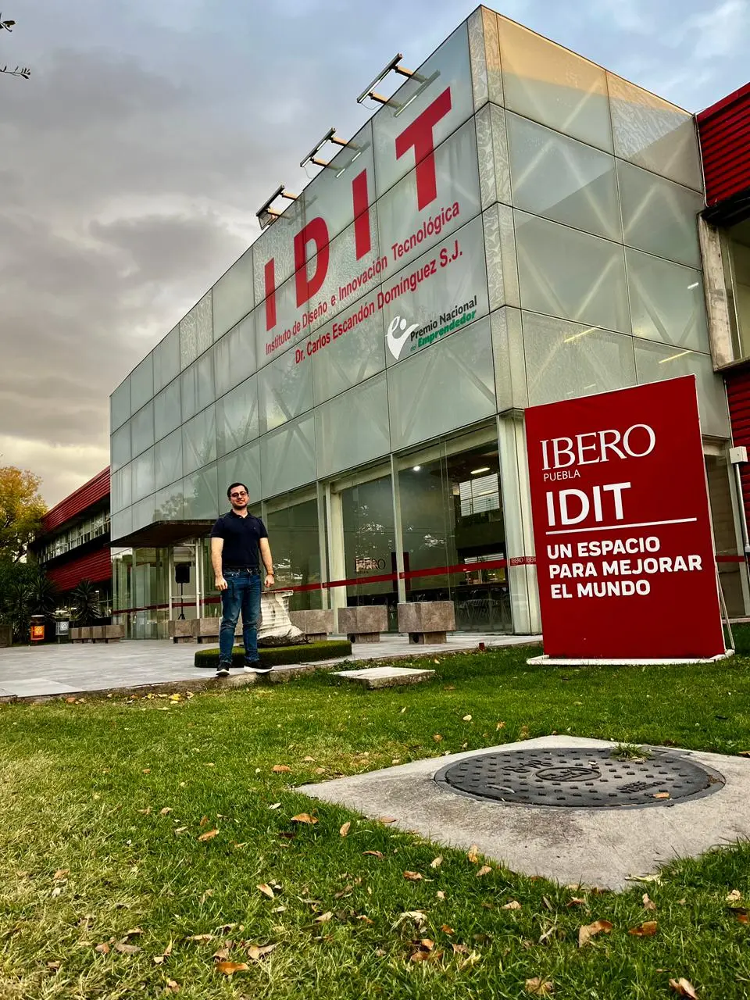
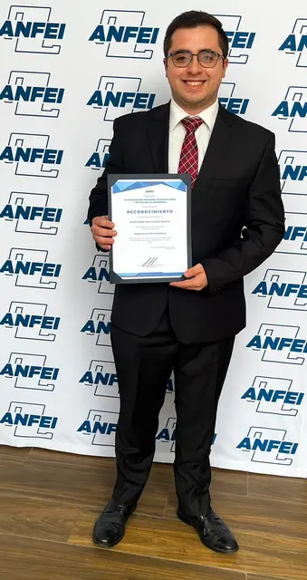
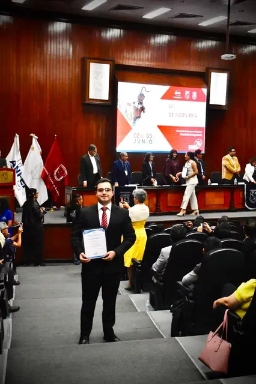

Projektportfolio
José Pablo Hernández Alonso
Mechatronikingenieur
Spezialist für:
KI | Robotik | IoT
Über mich
José Pablo Hernández Alonso
Mechatronikingenieur mit Leidenschaft für Innovation, Technologie und Design.
Mechatronikingenieur der Ibero Puebla. Begeistert von Technologie, Innovation und der Entwicklung von Lösungen mit KI, Robotik und IoT.
Derzeit bei Sistema ALARO tätig, mit Fokus auf KI- und Robotikprojekte, und stets auf der Suche nach neuen Werkzeugen und Technologien zur Verbesserung industrieller Prozesse und intelligenter Systeme.
Ausbildung: Mechatronik Ingenieurwesen
Universität: Ibero Puebla
GPA: 4.0 (Höchster Durchschnitt)
Erfahrung: Sistema ALARO
Spezialisierung: KI, Robotik, IoT
Auszeichnungen: Francisco Clavijero S.J., Diego de Ledesma S.J., CENEVAL und ANFEI
Interessengebiete
Robotik
Universal Robots, KUKA, FANUC und Entwicklung autonomer Robotersysteme.
Industrielle Automatisierung
SIEMENS-SPS-Programmierung mit TIA Portal und industriellen Steuerungssystemen.
KI-Bildverarbeitung
Implementierung von YOLO Vision, Mediapipe und intelligenten visuellen Erkennungssystemen.
IoT - Smart Home und Industrie
Entwicklung vernetzter Systeme für Automatisierung und Fernüberwachung.
CAD-Design und Simulation
3D-Modellierung und Simulation komplexer mechatronischer Systeme.
MCU-Programmierung
Raspberry Pi, NVIDIA Jetson Nano, PIC, ESP32, XIAO, AVR(atmega).
Entwicklung neuronaler Netze
Einsatz von TensorFlow und PyTorch für Datenanalyse und prädiktive Modelle.
Sprachen
Multikulturelle Kommunikation für internationale Projekte

100%

90%

60%

Philosophie
"Wo Präzisionstechnik auf kreative Innovation trifft"
Ich verbinde technische Erfahrung mit innovativem Denken, um Lösungen zu entwickeln, die Branchen verändern und Leben verbessern.
TECH DRIVEN, HEART INSPIRED
Von Technologie angetrieben, vom Herzen inspiriert
Innovation
Präzision
Wirkung
Akademische Exzellenz
Ausgewählte akademische Auszeichnungen und Erfolge
GPA 4.0
Ibero Puebla
Mechatronik-Ingenieurwesen
Medaille für den besten Durchschnitt
Ibero Puebla
Anerkennung akademischer Leistung
Medaille für ganzheitliche Bildung
Ibero Puebla
Anerkennung für ganzheitliche und kompetente Bildung
CENEVAL-Medaille
CENEVAL
Hervorragendes EGEL-Ergebnis
ANFEI-Anerkennung
Fakultät für Ingenieurwissenschaften
Bester Abschlussdurchschnitt der Fakultät für Ingenieurwissenschaften


CENEVAL-EGEL Ergebnisse
📈 Fachbereich
1180 / 1300💬 Sprache und Kommunikation
1195 / 1300✅ HERVORRAGEND IN BEIDEN BEREICHEN
CENEVAL-Zertifikat ansehenMeine Projekte
Entdecke einige meiner wichtigsten Arbeiten in Robotik, KI und Technologie.

NASA Space Apps Challenge 2024
Teilnahme an der globalen Challenge zur Lösung von Weltraum- und Klimaproblemen mittels KI und Datenmodellierung.

UR5 SRUB NURSE - Robotics AI
KI-basiertes Robotersystem zur Automatisierung von Aufgaben im Gesundheitswesen durch Kombination von Computer-Vision und LLMs.

Robotik
Entwicklung und Theorie von Knickarmrobotern und mobilen Robotern.


μSensgrip
Funktioneller Prototyp eines Robotergreifers mit Kraftsensorik (Diplomarbeit/Bachelorarbeit)

Industrielle Automatisierung PLC
Implementierung industrieller Steuerungssysteme mit SIEMENS-SPS und TIA Portal zur Prozessoptimierung.

Industrielle Automatisierung
Implementierung von Steuerungssystemen mittels verdrahteter Logik und analoger Prozesse.

FPGA Atari Brealout
Erzeugung von Videosignalen und eines Videospiels mittels Hardwarebeschreibungssprache.

EmoHelper
Erstellung von Gedichten und Texten aus verschiedenen Eingaben mit generativer KI und der OpenAI-API.

StableDiffusion_t_gcode - UR5
Kunsterzeugung mittels StableDiffusion sowie Bildverarbeitung und Bildtransformation.

Digitale Netzwerke
Erstellung von Dashboards unter Verwendung von ESP32 IoT und Datenbanken.

Neural_predictions
Nutzung von TensorFlow zur Vorhersage.

Intelligente Bäckerei
Einsatz von Computer-Vision-Technologie und KI zur Abwicklung von Brot-Einkäufen.

CNC-Drehen und -Fräsen
Bahnprogrammierung und Prozesssteuerung beim CNC-Drehen und -Fräsen.
Auszeichnungen
Auszeichnungen und Erfolge im Laufe meiner Laufbahn
Mit Auszeichnung abgeschlossen
Ibero Puebla
🎓 Exzellenz in der AusbildungGPA 4.0
Ibero Puebla
⭐ Perfekter DurchschnittMedaille für den besten Durchschnitt
Ibero Puebla
📊 Francisco Javier Clavijero S.J.Medaille für ganzheitliche Bildung y Competente
Ibero Puebla
🏅 Diego de Ledesma S.J.CENEVAL-Medaille
CENEVAL
⭐ Hervorragende LeistungANFEI-Anerkennung
ANFEI
📊 Bester Abschluss-Notendurchschnitt (Ingenieure)CSWP-Zertifizierung
SolidWorks
📜 BerufszertifikatIEEE-Publikation
IEEE
📄 Medizinische RobotikNASA Space Apps
NASA
🚀 Internationaler WettbewerbReferent bei CONITACS XIV
CONITACS
🏥 Nationaler KongressAussteller bei der ExpoIBERO
Ibero Puebla
🎓 Mehrere AusstellungenMeine Fähigkeiten
Kenntnisse und Technologien, die ich im Alltag einsetze profesional
Programmiersprachen
- Python
- C & C++
- MATLAB
- VHDL/Verilog
- JavaScript/React
Robotik & Automatisierung
- Universal Robots
- PLC SIEMENS - TIA Portal
- KUKA & FANUC
- Eingebettete Systeme
- Industrielle Steuerung
Künstliche Intelligenz &
Bildverarbeitung
- YOLO Vision
- Mediapipe
- TensorFlow & PyTorch
- OpenCV
- LLM Integration
Hardware & Geräte
- Raspberry Pi
- Jetson NVIDIA
- Arduino
- ESP32
- PIC
- Cisco Packet Tracer
- WebApps
- Sensoren & Aktuatoren
- IoT
Konstruktion & Entwicklung
- SolidWorks (CSWP)
- Fusion 360
- CATIA
- AutoCAD
- Simulation
- Prototypenbau
- 3D-Druck
- CAD-Konstruktion
- CAM (G-Code-Generierung)
Soft Skills
- Projektmanagement
- Teamarbeit
- Problemlösungskompetenz
- Technische Kommunikation
- Kontinuierliches Lernen
- Englisch (C1)
- Deutsch (B1)
Kontakt
Hast du ein Projekt im Kopf? Lass uns sprechen.
Kontaktinformationen

GitHub
github.com/JPHAJPWebpage
jphajp.comStandort
Puebla, Mexiko